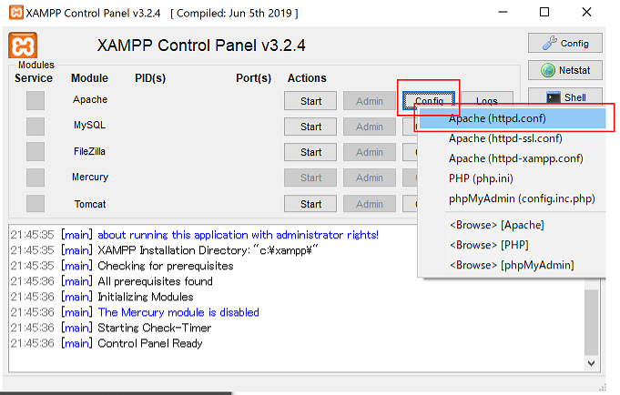

C:\danoniplusの場合、コマンドプロンプト もしくは PowerShell(管理者)にて下記のように指定します。mklink /D C:\danoniplus C:\xampp\apache\htdocs\danoniplus
※ C:\xampp\apache\htdocs にドキュメントルートがあることが前提です。(Xamppの既定値)
これにより、httpd.confを変更しなくても http://localhost/danoniplus/にアクセスすればダンおに用フォルダーへアクセスできます。
参考： https://dev.classmethod.jp/etc/make_windows_symbolic_link/
http://localhostへアクセスする。
Apacheではポート80番を利用していますが、他のアプリケーション（Skypeなど）で すでにポート80番を使用している場合があります。
下記のリンクのように、Skype側のポートを変更することで解消できます。
https://web-generalist.com/skype-port-off/
何らかの理由で、他のアプリケーションのポートが変更できない場合は、
Xampp(Apache)側のポートを変更します。
Xamppを開き、Config -> httpd.conf をクリックします。

http://localhost:10000/となります。